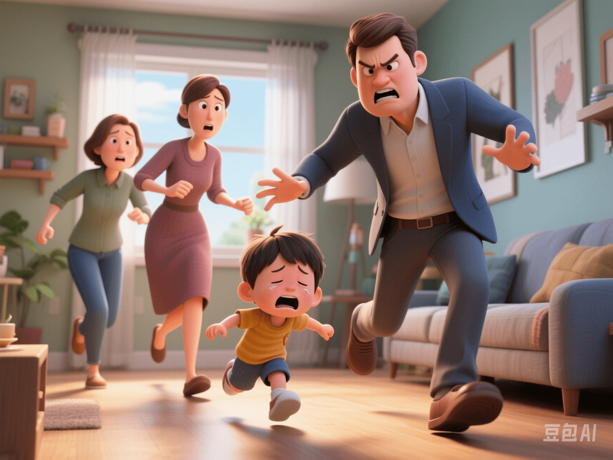

Generational Trauma: Breakthrough and Healing
PeaceLove.Top Insights :2025-04-12
Today, let's talk about a topic that has been extremely popular in psychology, neuroscience, and social media in recent years - **Generational Trauma** 🧬💔
🌪 What is Generational Trauma?
Generational trauma, also known as transgenerational trauma, refers to the situation where an individual has not personally experienced a certain major trauma but bears the 'after - effects' of the sufferings endured by their predecessors at the psychological or physiological level. These traumas include:
- Historical disasters such as wars, genocides, slavery, and forced migrations
- Family traumas such as domestic violence, sexual assault, alcoholism, and suicide
- Social oppressions such as long - term poverty, discrimination, and marginalization
🧬 Scientific Research: Can Trauma be 'Engraved' on Gene Expression?
Recent epigenetic studies have found that major traumatic events can change the way human genes are expressed, and these expression mechanisms can be passed on to future generations. Here are some examples:
- 💣 The study of the 'Dutch Winter Famine': Children born to mothers who experienced famine during pregnancy had a significantly higher incidence of diabetes, depression, and obesity in adulthood.
- 🕍 Descendants of Holocaust survivors: A US study found that their stress - hormone cortisol levels were disordered, and they were more sensitive to anxiety and trauma.
- 🧕 Syrian refugee children: Research shows that even if they are born in a stable environment, they may exhibit symptoms such as panic, hyper - vigilance, and adjustment disorders.
📌 The key point is: it's not about 'inheriting' the trauma, but 'transmitting' the adaptation patterns and physiological imprints of the trauma.
💔 Cultural Phenomenon: #ParentingCycleBreak
On social media, more and more young people are using the #ParentingCycleBreak hashtag, indicating that they want to actively recognize and end the emotional scars and parenting styles inherited from the previous generation. Common goals include:
- 🧱 Reject 'demolishing parenting' (not allowing crying or showing weakness)
- 🪞 Learn to express and accept emotions (instead of inter - generational silence)
- 💬 Initiate family conversations and tell untold trauma stories
- 🧠 Actively seek psychotherapy and family therapy to break the 'inter - generational cycle'
📲 You may have also come across content like this:
- "My mother always equated love with control. I don't want to treat my children that way."
- "No one in my family ever said 'I love you'. Now I say it three times a day."
🧠 Why are 'Awareness' and 'Expression' the Keys?
Psychologists point out that unexpressed emotions do not disappear but are passed on inter - generationally in the form of trauma. If parents have not dealt with their own traumas, they may unconsciously:
- Practice emotional avoidance (silence, indifference)
- Exercise emotional control (humiliation, suppression)
- Replicate behaviors (violence, over - protection)
Children growing up in such an environment may develop traits such as anxiety, self - denial, excessive people - pleasing, and suppressed anger.
🛠 How to Break the Cycle of Generational Trauma?
- ✔️ Acknowledge and name the trauma: Stop avoiding the unspoken events in family history.
- ✔️ Create a safe emotional space: Practice emotional expression rather than suppression in the family.
- ✔️ Seek professional help: Family therapy and individual psychological counseling are effective intervention methods.
- ✔️ Write and tell family stories: Turn silence into narration and let memories release emotions.
- ✔️ Be an 'awakened parent': Start changing from yourself and let the next generation grow freely.
💡 Summary in One Sentence:
We can be the end of the pain or the beginning of the healing. You don't have to inherit everything; you can choose to end it. #ParentingCycleBreak is not a negation of the previous generation but a brave act of healing.